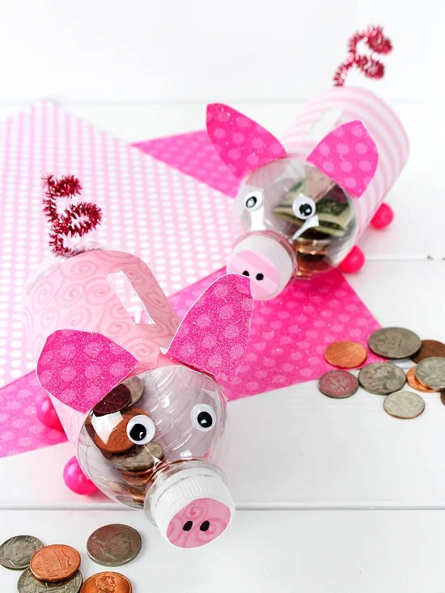

#1. Bookmarks Idea for Ice-Cream Sticks
Summer vacations are synonymous with eating lots of ice cream. Make adorable bookmarks with ice cream sticks
How much waste do you need?
- Ice cream sticks
- Ribbon
- Glue
- Felt pens
- Googly eyes
- Wash and dry the ice cream sticks.
- Leave the top 1/4th of the stick unoccupied. Twirl the ribbon around the stick.
- The pens can be used to decorate and color the stick.
- The top is for the face. Stick googly eyes on it and draw a mouth.
- Your bookmarks are as unique as the books they will be in!
#2. Ice-Cream Stick Fighter Plane Ideas
If your child isn’t a good reader, you can have him or she convert the ice cream sticks to a fighter jet.
How much waste do you need?
- ice cream sticks X 4
- wooden clothespin
- Paint
- Small bead/Eraser
- Glue
- Scissors/Cutter
- Wash and dry the ice cream sticks.
- You can paint the sticks in any color you like and let them dry.
- Make 3 pieces from an ice cream stick and glue the ends together. This is how you make the propeller for your plane.
- You can either cut a little bit of the eraser and paint it or use a small bead to do it.
- Attach 2 ice cream sticks to your clothespin. They should be perpendicular and equal.
- Flip the clip over and do the same with 2 more ice cream sticks. They should overlap.
- The propeller is complete by gluing the eraser/bead to an ice cream stick
- The propeller should be inserted into the clothespin’s mouth. You are now ready to fly!
#3.Vase from Bottle Idea
Make your cold water or water bottles pretty vases to make your home greener.
How much waste do you need?
- Plastic or glass bottles
- Paint
- Paintbrush
- Optional: Masking tape
- To clean the bottle, wash it well and take it off the label
- You can paint the bottle any color you like.
- After the paint has dried, apply another coat to make sure the color is opaque.
- To make patterns on bottles, you can also use masking tape.
- Tape is used to create the design before you paint.
- After spray painting the bottle with tape, you can still see the transparent part of the bottle.
- It will look beautiful.You can decorate your living room with a vase by adding a flower!
#4.Bird House from Carton Idea
An old carton of milk or juice can become a home for a little birdie.
How much waste do you need?
- Juice cartons or milk
- Paint
- Glue
- Plastic spoon
- Colored paper
- Cutter
- Soft book cover
- Wool
- Let dry the carton before you paint it.
- Use water to dilute the glue and apply a thin layer on the book covers and cartons.
- Use the colored paper on the cartons to create a vibrant effect before the glue dries. Even one carton can be overlapped.
- Make the door, drill two holes on the carton’s top and one on its side.
- To place bird seeds, make a small X-shaped cut just below the door.
- For make a roof, place the cover of the soft book on top of your carton.
- To hang the birdhouse, make two small slits on the roof.
#5.Spoon Vase Idea
This out-of-waste spoon idea is a great way to store pens and other stationery.
How much waste do you need?
- Large cans
- Paper plate
- Plastic spoons
- Scissors
- Paint
- Glue
- Use a pair of sharp scissors to remove the stem.
- Paint the spoons’ outer convex portion.
- Use glue to stick the spoons to the top of the container
- Layer on layers of plastic spoons until you reach the bottom of the container.
- Add flowers to your elegant spoon vase and you are done.
#6.Pineapple Pen Stand Ideas
A plastic bottle can be transformed into a pineapple pen stand, which will instantly brighten up the desk of your child.
How much waste do you need?
- Plastic bottles
- Green wool
- Green paper
- Tape
- Paintbrushes and paints
- Glue
- Let the plastic bottle dry before you paint it yellow.
- Make small pieces of green wool from strips. Stick them in a diagonal form to make tiny diamonds.
- Make zig-zag lines on green color paper.
- It can be cut in the shape of a pineapple leaf. Stick the leaf to the rim of your plastic bottle.
- You are now ready to use your brand-new pen stand.
#7.Sock Puppets Idea
Simple puppets made from socks can transform any bedtime story into an entertaining puppet show. You can customize them to be like the favorite character of your child.
How much waste do you need?
- Two socks, plain or printed
- Buttons or googly eyes
- Wool and Wool needle
- Sewing thread
- Scissors
- Glue
- Socks should be washed and dried properly.
- The buttons or googly eyes on the socks’ heels can be stuck or sewn. Put 2 eyes per sock.
- Make the hair of your puppet using strips of wool.
- Attach the hair to the sock just above the eyes.
- The puppets will be ready to perform when you hold them in your hands.
#8.Popsicle Photo Frame Idea
Enjoy your favorite photos in these fun photo frames made of popsicle sticks
How much waste do you need?
- Popsicle sticks
- Scissors
- Glue
- Paint
- Crayons
- Whitepaper
- Paint both sides of the popsicle sticks.
- Place them so that they form a square shape with the ends sticking out on all four sides.
- A piece of white paper should be cut slightly larger than the original size.
- Glue the popsicle sticks to the white paper.
- You can now take a photo or make a hand-drawn or painted frame!
#9.Bottle Money Bank Idea

How to get the most out of newspaper waste Here’s one. To teach your children the importance of saving as well as reusing, help them to create a piggybank from an old bottle.
How much waste do you need?
- Plastic bottles
- A piece of paper (Be imaginative with your newspaper selection)
- Felt pens
- Glue
- Dry the bottle.
- Cut a hole in the bottle’s side to allow you to insert a coin.
- To prevent any tearing, seal the edges with tape or glued paper.
- You can cover the rest of your bottle with paper and make patterns or paints.
- With just the same paper sticking, you can make it look like a porcine.
- Your money bank is available!
#10.The Beach In A Bottle Idea
Bring it home in a plastic container the next time you go to the beach. This is one of the most effective ways to get rid of plastic bottles. Here’s how it works:
How much waste do you need?
- Big plastic bottle
- Water
- Blue food coloring
- Oil
- Rocks
- Seashells
- Sand
- Glue
- Clean the plastic bottle until the glue residue is gone. If the bottle is horizontally tilted, fill it with enough sand. You can also add small seashells or rocks.
- You can mix water and blue coloring until you get the color of the ocean.
- The blue water and sand should be mixed until the bottle is about 1/3 full.
- Next, pour oil into the remaining 1/3 of the bottle.
- You can glue the cap to the bottle so it is impossible to open.
- To see the ocean and beach whenever you like, tilt your bottle.